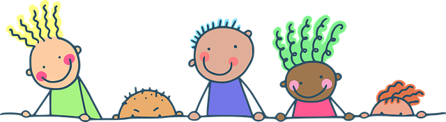
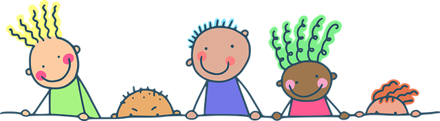

Om fritidshjemmet
Et trygt og sjovt fritidshjem
Fritidshjemmet på Katholt er et sted, hvor leg
og fællesskab går hånd i hånd. Vi har plads til op til
100 børn fordelt på fire grupper og tilbyder et miljø
fyldt med glæde, nærvær og tryghed.
Her møder børnene engagerede voksne og
spændende aktiviteter, der styrker deres udvikling
og fællesskabsfølelse. Sammen skaber vi en
hverdag, hvor alle trives og føler sig hjemme
Værdier og dagligdag
Vi lægger vægt på et tæt samarbejde med
forældrene for at give børnene en hverdag præget
af omsorg, udfordringer og tryghed.
Dette skaber et udviklende miljø,
hvor børn og voksne kan trives sammen.
Dagligdagen hos os er kendetegnet ved varme,
nærvær og hygge. Vi ønsker, at børnene oplever
en hverdag fyldt med skæg, latter og ballade,
da vi ved, at en positiv tilgang kan mindske konflikter
og skabe glæde.


 

Et trygt og udviklende fritidshjem
Vi arbejder målrettet for at skabe tryghed for børnene,
da tryghed er fundamentet for leg, læring og udvikling.
Vi ønsker, at børnene her opbygger selvtillid,
udforsker grænser og får en stærk social forståelse.
Vi prioriterer:
- At børnene oplever en
vekselvirkning mellem fri leg og voksenstyrede
aktiviteter. - Idræt, leg og bevægelse som en vigtig
del af hverdagen. - Et godt lege- og læringsmiljø,
hvor børnene udvikler fantasi,
sprog, selvstændighed og ansvarlighed.